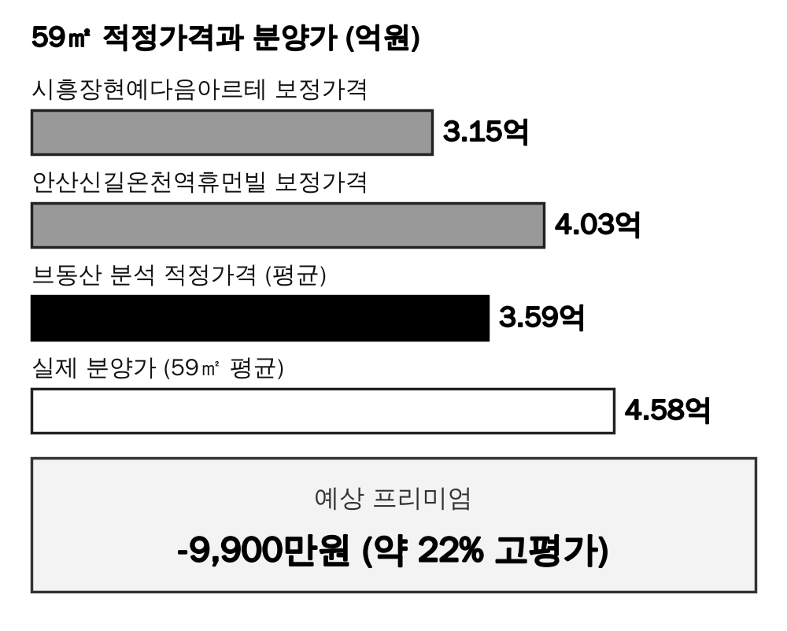

폰에서 올리는 법
- 먼저 아래 이미지 전체 받기(zip)로 사진을 폰에 저장합니다.
- 네이버 앱 글쓰기를 열고, 이 페이지에서 위에서부터 [복사] → 앱에 붙여넣기를 반복합니다.
- 이미지 칸에서는 앱의 사진 추가로 같은 번호 사진을 넣습니다. 끝나면 맨 아래 체크리스트로 발행합니다.
① 제목
시흥 거모 아테라 | 예상프리미엄 -9,900만, 분양가 평면 총정리
② 태그 (쉼표로 구분 · # 없이)
시흥거모아테라,거모지구아파트,시흥시청약,민간참여공공분양,금호건설,한신공영,신혼부부특별공급,거모동아파트,시흥시분양정보,공공분양자격,분양가상한제,경기도아파트청약,부동산정보
본문
브동산 · 청약 언박싱 No.094 · 발행일 2026. 11. 9 (2026.11.06 공고 기준)
큰 소제목 — 굵게 + 큰 글씨
1. 결론부터 — 이 단지 예상 프리미엄은 -9,900만
본문
경기도 시흥시 거모동에 들어서는 민간참여 공공분양, 시흥 거모 아테라를 브동산 모형으로 분석했다. 59㎡ 평균 분양가가 비교단지 보정 평균보다 높게 나왔다.

본문
브동산이 분석한 이 단지의 적정가격은 3.59억원, 실제 분양가는 4.58억원으로, 예상 프리미엄은 -9,900만원(약 22% 고평가)입니다.

작은 회색 글씨(설명·메모)
공식 홈페이지 대표 조감도. CG 이미지는 실제와 다를 수 있다.
본문
어디? 경기도 시흥시 거모동 978번지 일원, 시흥거모 A-6블록. 총 720세대(55A·59A·59B·59C), 2029년 9월 입주예정.
본문
언제? 공고일 2026년 11월 6일, 사전청약 당첨자 11월 16~17일, 신혼부부 등 11월 26~27일, 당첨자 발표 12월 8일.
본문
얼마? 59㎡대 세 타입(59A·59B·59C) 평균 분양가 4.58억원.
본문
주의 민간참여 공공분양이라 공공분양 자격 요건이 별도로 적용된다. 이 글의 분석에서 제외한 특수 타입은 없다.
큰 소제목 — 굵게 + 큰 글씨
2. 왜 이 가격이 나왔을까 — 입지와 가격 비교
작은 소제목 — 굵게
입지: 거모동 신규 택지, 역과는 거리가 있다
본문
시흥 거모동 생활권이다. 공고와 공식 홈페이지가 제시하는 입지·교통 계획은 향후 변경 가능성이 있어, 현재 이용 가능한 생활 인프라와 계획 단계 정보를 구분해서 볼 필요가 있다.

작은 회색 글씨(설명·메모)
SITE·비교단지·역 위치를 표시한 브동산 자체 제작 개략도. 축척과 거리는 실제 지도와 다를 수 있다.
본문
배정학교와 통학 동선은 입주 전 교육청의 최종 배정 기준을 다시 확인해야 한다.
작은 소제목 — 굵게
비교단지: 시흥장현예다음아르테 · 안산신길온천역휴먼빌
본문
같은 59㎡대 실거래 중 시흥장현예다음아르테(2022.12 준공)와 안산신길온천역휴먼빌(2005.07 준공)을 비교단지로 골랐다. 후자는 2005년식 구축이라 연식 보정폭이 크고, 장곡동·신길동 소재라 거모동과 완전히 같은 생활권은 아니라는 한계가 있다.

작은 회색 글씨(설명·메모)
입지 40점·브랜드 20점·상품성 40점, 100점 만점 기준 브동산 모형 자체 산정.
본문
종합평점은 SITE 50점, 시흥장현예다음아르테 47점, 안산신길온천역휴먼빌 36점. SITE의 점수가 더 높아서 비교단지 시세를 각각 3%, 14% 올려서 반영했다.

작은 회색 글씨(설명·메모)
연령 보정은 SITE 입주예정월(2029.09)과 비교단지 입주월의 차이에 브동산 공식을 적용했다.
본문
두 보정가격은 3.15억과 4.03억, 평균인 브동산 분석 적정가격은 3.59억원. 실제 분양가 4.58억원과의 차이가 곧 예상 프리미엄 -9,900만원이다.
이미지 06 · 여기에 삽입비교단지 보정가격과 SITE 분석 적정가격, 실제 분양가 비교 막대 그래프


저장이 안 되면 이미지를 길게 눌러 저장하세요.
작은 회색 글씨(설명·메모)
비교단지 2곳의 보정가격 평균이 SITE의 브동산 분석 적정가격. 전용 59㎡ 총액 기준.
큰 소제목 — 굵게 + 큰 글씨
3. 브동산 한줄평
본문
민간참여 공공분양이라 공급가 자체가 시세보다 높게 느껴질 수 있는 단지라, 신혼부부·한부모가족 특별공급 대상이 아니라면 투자 매력은 크지 않다.
본문
비교단지 중 하나가 2005년식 구축이라 연식 보정이 크고, 다른 하나도 인접 동이라 완전한 대체재는 아니라는 한계가 있다. 공공분양 자격 요건과 납부 조건을 공고문에서 먼저 확인해야 한다.
큰 소제목 — 굵게 + 큰 글씨
4. 시흥 거모지구 최근 분양단지, 대표 타입은 얼마였나
본문
시흥 거모지구에서 최근 분양된 단지 두 곳을 비교했다. 아래 표는 전용 59㎡가 아닌 각 단지의 대표 타입 기준이라 직접 비교에는 한계가 있다는 점을 밝힌다.

작은 회색 글씨(설명·메모)
최초 분양가 기준, 발코니 확장비·유상옵션·취득세 제외. 타입이 서로 달라(55㎡/84㎡/59㎡) 단순 총액 비교만 참고용으로 보기 바란다. 출처: 서울신문, 스마트투데이, 경기신문 보도.
본문
같은 거모지구의 LH 신혼희망타운은 55㎡가 4.5억원 안팎이고, 호반써밋은 84㎡ 분양가상한제 적용 단지다. 이번 시흥 거모 아테라는 59㎡ 평균 4.58억원으로, 같은 지구 안에서도 민간참여 공공분양 물량이 상대적으로 높게 책정된 편이다.
큰 소제목 — 굵게 + 큰 글씨
5. 분양 사이트 자료로 한 번에 보기
본문
입지 → 단지 개요 → 단지배치도 → 평면도 → 커뮤니티 → 청약 일정 순서로 정리했다.
작은 소제목 — 굵게
입지 정보

작은 회색 글씨(설명·메모)
이미지 01 · 공식 홈페이지 입지환경. 입지·교통 계획은 변경될 수 있다.
작은 소제목 — 굵게
단지 개요

작은 소제목 — 굵게
단지 배치도

작은 회색 글씨(설명·메모)
이미지 02 · 공식 홈페이지 단지 배치도. CG·계획 이미지는 실제와 다를 수 있다.
작은 소제목 — 굵게
평면도
본문
55A 477세대, 59A 80세대, 59B 74세대, 59C 89세대로 계획됐다.

작은 회색 글씨(설명·메모)
이미지 03 · 55A 평면도 (477세대).

작은 회색 글씨(설명·메모)
이미지 04 · 59A 평면도 (80세대).

작은 회색 글씨(설명·메모)
이미지 05 · 59B 평면도 (74세대).

작은 회색 글씨(설명·메모)
이미지 06 · 59C 평면도 (89세대).
작은 소제목 — 굵게
커뮤니티

작은 회색 글씨(설명·메모)
이미지 07 · 공식 홈페이지 커뮤니티 계획. CG·계획 이미지는 실제와 다를 수 있다.
작은 소제목 — 굵게
청약 일정과 공급 물량

본문
이번 공고는 신혼부부·예비신혼부부·한부모가족을 대상으로 하는 공공분양 성격이 강하다. 사전청약 당첨자와 본청약 대상자의 접수 일정이 다르므로 본인 유형을 먼저 구분해야 하며, 접수 전이라 경쟁률은 아직 확인할 수 없다.
큰 소제목 — 굵게 + 큰 글씨
6. 결론
본문
공공분양 자격이 되는 신혼부부·한부모가족이 아니라면, 59㎡ 분양가가 주변 실거래 보정 평균보다 크게 높아 당첨만을 목표로 무리하게 넣을 이유는 크지 않다.
본문
자세한 평가표와 적정가격 산출 과정은 브동산 홈페이지에서 확인하실 수 있습니다.
작은 회색 글씨(설명·메모)
본 글은 정보 제공 목적이며 투자 권유나 청약·매수 대행이 아니다. 실제 청약·계약 전에는 청약홈 입주자모집공고와 공식 안내를 확인해야 한다.
마지막 · 발행 체크리스트
- 카테고리: 부동산이야기
- 제목 · 태그 입력 확인
- 대표 이미지(썸네일): cover.jpg
- 이미지가 순서대로 들어갔는지 훑어보기
- 발행 버튼